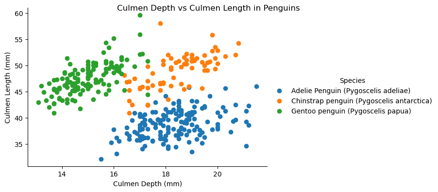

import pandas as pd
url = "https://raw.githubusercontent.com/pic16b-ucla/24W/main/datasets/palmer_penguins.csv"
penguins = pd.read_csv(url)
import matplotlib.pyplot as plt
import seaborn as snsImport the packages and datasets required to create the visualization:
Exploring the Data
Use the head() function to look through what each entry in the data set looks like
penguins.head()| studyName | Sample Number | Species | Region | Island | Stage | Individual ID | Clutch Completion | Date Egg | Culmen Length (mm) | Culmen Depth (mm) | Flipper Length (mm) | Body Mass (g) | Sex | Delta 15 N (o/oo) | Delta 13 C (o/oo) | Comments | |
|---|---|---|---|---|---|---|---|---|---|---|---|---|---|---|---|---|---|
| 0 | PAL0708 | 1 | Adelie Penguin (Pygoscelis adeliae) | Anvers | Torgersen | Adult, 1 Egg Stage | N1A1 | Yes | 11/11/07 | 39.1 | 18.7 | 181.0 | 3750.0 | MALE | NaN | NaN | Not enough blood for isotopes. |
| 1 | PAL0708 | 2 | Adelie Penguin (Pygoscelis adeliae) | Anvers | Torgersen | Adult, 1 Egg Stage | N1A2 | Yes | 11/11/07 | 39.5 | 17.4 | 186.0 | 3800.0 | FEMALE | 8.94956 | -24.69454 | NaN |
| 2 | PAL0708 | 3 | Adelie Penguin (Pygoscelis adeliae) | Anvers | Torgersen | Adult, 1 Egg Stage | N2A1 | Yes | 11/16/07 | 40.3 | 18.0 | 195.0 | 3250.0 | FEMALE | 8.36821 | -25.33302 | NaN |
| 3 | PAL0708 | 4 | Adelie Penguin (Pygoscelis adeliae) | Anvers | Torgersen | Adult, 1 Egg Stage | N2A2 | Yes | 11/16/07 | NaN | NaN | NaN | NaN | NaN | NaN | NaN | Adult not sampled. |
| 4 | PAL0708 | 5 | Adelie Penguin (Pygoscelis adeliae) | Anvers | Torgersen | Adult, 1 Egg Stage | N3A1 | Yes | 11/16/07 | 36.7 | 19.3 | 193.0 | 3450.0 | FEMALE | 8.76651 | -25.32426 | NaN |
Start thinking of questions to answer: this dataset seems to group well by species. We can look at the different features that different species of Penguins have. For example, we can see what approximate culmen length and depth different species have, and how they may vary.
In order to represent this graphically, we can use the Seaborn package to create a visualization. First, we set up our FacetGrid, and we designate the hue to be based on the Species, since that is the grouping we wish to use. Then, we map our data, using a scatter plot based on our teo variables of interest (Culmen Depth, Culmen Length). We will add a legend and title for extra clarity for viewers of the visualization
g = sns.FacetGrid(penguins, hue="Species", height=4, aspect=1.5)
g.map(plt.scatter, 'Culmen Depth (mm)',"Culmen Length (mm)").add_legend()
g.fig.suptitle("Culmen Depth vs Culmen Length in Penguins", fontsize=12)Text(0.5, 0.98, 'Culmen Depth vs Culmen Length in Penguins')
I’m also interested to see how Culmen Length (which is equivalent to the length of the beak of a bird) is related to the Body Mass of that bird. Let’s make a simple scatter plot to see if there is some sort of association between the two variables. Here, were are simply going to use Matplotlib to create the visualization. To improve readability, I have included the x and y axis names.
plt.scatter(penguins['Body Mass (g)'], penguins['Culmen Length (mm)'])
plt.xlabel("Body Mass (g)")
plt.ylabel("Culmen Length (mm)")Text(0, 0.5, 'Culmen Length (mm)')From this, a relationship becomes clear, as body mass increases, the culmen length seems to increase as well. This seems to be an interesting idea to navigate. Does this relationship hold true for each species individually? Doe a higher mass correlate with a higher culmen length?
Visualizing Culmen Length and Body Mass
In order to visualize the relationship between culmen length and body mass, we could simply create a colored scatterplot, as we did before (for Culmen Length and Width). However, this time, I wanted to create a violin plot, to clearly show that the median culmen length is higher for the heavier individuals in a species compared to the lighter individuals.
The first step of creating this violin plot is to create a metric for heavy vs. light. The best idea to define this was simply to find the average within each species, and then define a function to add a new column. In this column, each entry will be either defined to be heavy (if their mass is greater than the species average) or light. This new column will be named “Mass Comparative”.
species_avg_mass = penguins.groupby('Species')['Body Mass (g)'].mean()
print(species_avg_mass)Species
Adelie Penguin (Pygoscelis adeliae) 3700.662252
Chinstrap penguin (Pygoscelis antarctica) 3733.088235
Gentoo penguin (Pygoscelis papua) 5076.016260
Name: Body Mass (g), dtype: float64def classify_mass(i):
if i['Body Mass (g)'] > species_avg_mass[i['Species']]:
return 'heavy'
else:
return 'light'
penguins['Mass Comparative'] = penguins.apply(classify_mass, axis=1)Now, we have created the new column, so we simply need to preview the dataset, to make sure it has been inserted correctly:
penguins.head()| studyName | Sample Number | Species | Region | Island | Stage | Individual ID | Clutch Completion | Date Egg | Culmen Length (mm) | Culmen Depth (mm) | Flipper Length (mm) | Body Mass (g) | Sex | Delta 15 N (o/oo) | Delta 13 C (o/oo) | Comments | Mass Comparative | |
|---|---|---|---|---|---|---|---|---|---|---|---|---|---|---|---|---|---|---|
| 0 | PAL0708 | 1 | Adelie Penguin (Pygoscelis adeliae) | Anvers | Torgersen | Adult, 1 Egg Stage | N1A1 | Yes | 11/11/07 | 39.1 | 18.7 | 181.0 | 3750.0 | MALE | NaN | NaN | Not enough blood for isotopes. | heavy |
| 1 | PAL0708 | 2 | Adelie Penguin (Pygoscelis adeliae) | Anvers | Torgersen | Adult, 1 Egg Stage | N1A2 | Yes | 11/11/07 | 39.5 | 17.4 | 186.0 | 3800.0 | FEMALE | 8.94956 | -24.69454 | NaN | heavy |
| 2 | PAL0708 | 3 | Adelie Penguin (Pygoscelis adeliae) | Anvers | Torgersen | Adult, 1 Egg Stage | N2A1 | Yes | 11/16/07 | 40.3 | 18.0 | 195.0 | 3250.0 | FEMALE | 8.36821 | -25.33302 | NaN | light |
| 3 | PAL0708 | 4 | Adelie Penguin (Pygoscelis adeliae) | Anvers | Torgersen | Adult, 1 Egg Stage | N2A2 | Yes | 11/16/07 | NaN | NaN | NaN | NaN | NaN | NaN | NaN | Adult not sampled. | light |
| 4 | PAL0708 | 5 | Adelie Penguin (Pygoscelis adeliae) | Anvers | Torgersen | Adult, 1 Egg Stage | N3A1 | Yes | 11/16/07 | 36.7 | 19.3 | 193.0 | 3450.0 | FEMALE | 8.76651 | -25.32426 | NaN | light |
Now that are dataset has been updated, we are ready to begin our visualization. We will be using a violin plat through catplot in the Seaborn package. We will be grouping by species, with each species having its own “violin”. On the left side, there will be the data for the “heavy” part of the population, and on the right side, there will be the data for the “light” part of the population. Thus, the hue component will be our new Mass Comparative Column. The x variable will be species, and on the y we will have our culmen length. Split will be true, since we want to show the individual distributions.
I renamed the ticks and added a title to improve readability of the visualization.
j = sns.catplot(data=penguins, kind="violin", x="Species", y="Culmen Length (mm)", hue="Mass Comparative", split=True)
j.set_xticklabels(['Adelie Penguin', 'Chinstrap Penguin', 'Gentoo Penguin'])
j.fig.suptitle("Culmen Length Distribution for Penguins based on Weight and Species", fontsize=12)Text(0.5, 0.98, 'Culmen Length Distribution for Penguins based on Weight and Species')Now that the visualization is complete, we can see that the Culmen Length visualizations differ for each species. They also differ for “heavy” and “light” individuals within the species, where the distributions of the “heavy” members are higher in terms of cumen length. Further analysis can be done to see if these differences are significant.